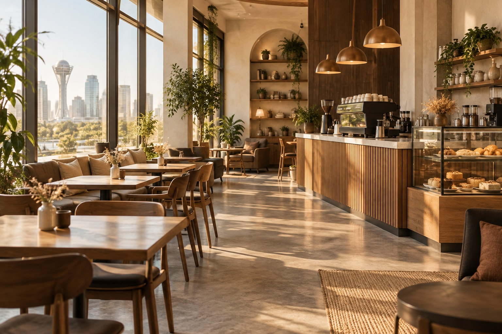

Craft Coffee in the Heart of Astana
Experience the rich, bold flavors of our locally roasted specialty beans. Perfect mornings start here.
View Our Menu
Why Choose Aura?
- Locally Roasted: We roast our beans in-house every week for maximum freshness.
- Expert Baristas: Our team is trained to extract the perfect shot of espresso every time.
- Cozy Atmosphere: Fast Wi-Fi, comfortable seating, and a relaxing vibe for work or study.